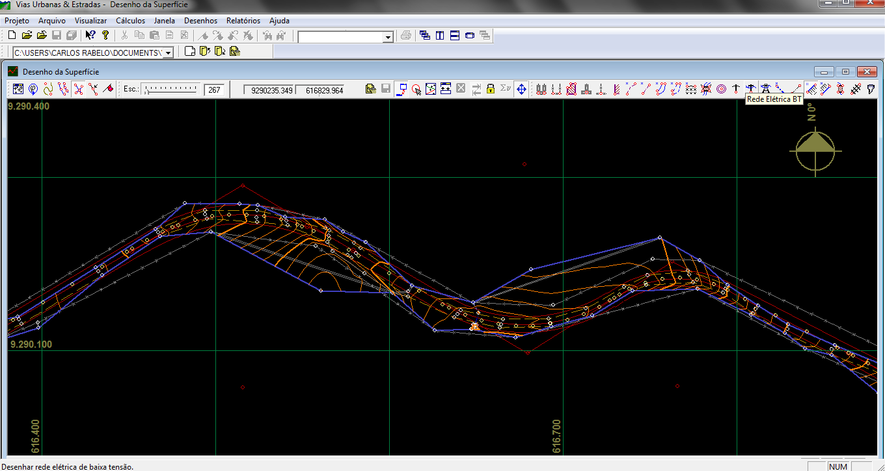

Projeto Geométrico
Através desta tela pode-se desenvolver todo o projeto geométrico. Pode-se incluir excluir ou alterar curvas horizontais com um simples click do mouse. Nestas operações o recálculo é feito imediatamente, informando imediatamente ao projetista as conseqüências das alterações feitas. Ao se passar o mouse sobre um PI, seus dados são imediatamente mostrados e ao se clicar sobre um PI pode-se movê-lo com o mouse. Deste modo o projeto geométrico se torna uma tarefa muito mais dinâmica e produtiva: Ao se mover o mouse o recálculo é feito automaticamente permitindo ao projetista uma visão muito mais ampla do projeto. Apenas movimentos válidos são permitidos nos PIs, caso um movimento produza sobreposição de curvas ou acs negativos no caso de curvas com transição, ele simplesmente não é feito, evitando que o projetista cometa erros.
As seções e o greide também podem ser visualizados simultaneamente com o projeto geométrico. Para isso, basta que se chame o desenho das seções e/ou o desenho do greide através do Menu Desenhos. As alterações no projeto geométrico não são refletidas imediatamente nas seções, para tal é preciso solicitar o cálculo geométrico. Na verdade este sincronismo não seria de muito útil no desenvolvimento do projeto geométrico, pois o projeto geométrico é feito antes do greide e qualquer alteração em um PI resulta em um reseccionamento de todo o trecho já que todas as estacas a partir do PC da primeira curva alterada mudariam de lugar. No entanto na parte final do projeto é útil visualizar o projeto geométrico e as seções, para se veja no detalhe algum ponto específico. Para sincronizar as escalas do desenho do greide com o desenho geométrico, click no campo que contém a escala e digite nele o valor da escala do desenho que se deseja sincronizar, assim os 2 desenhos estarão na mesma escala. Um outro problema que surge ao se visualizar o greide e o geométrico ao mesmo tempo é a direção do projeto geométrico, que para uma melhor visualização simultânea com o greide, deveria estar sempre para a direita, o que na maioria das vezes não ocorre. Para fazer que o traçado fique para a direita basta usar o botão Rotacionar na barra de ferramentas. Para maiores detalhes veja o diálogo de rotação do desenho.

Desenho do projeto Geométrico. A fronteira esta desenhada em azul
Caso se deseje dar valores específicos a um PI basta chamar o diálogo de edição do PI, através da tecla CTRL, e todos os dados do PI podem ser precisamente alterados. O programa Vias Urbanas & Estradas permite que se definam áreas especiais. Estas áreas especiais são polígonos fechados e devem ser usados para indicar principalmente barrancos ou cursos de água. Este polígono será definido como um plano e os pontos que estiverem dentro dele serão desconsiderados na interpolação das curvas de nível. Para se definir estas áreas deve-se usar o botão Áreas Especiais na barra de ferramentas. Observe que este botão é alternado com o botão Bordos .
Direitos Autorais © (2010 - 2015) - Boole Software LTDA - Todos os direitos Reservados.
Created with the Personal Edition of HelpNDoc: Write eBooks for the Kindle